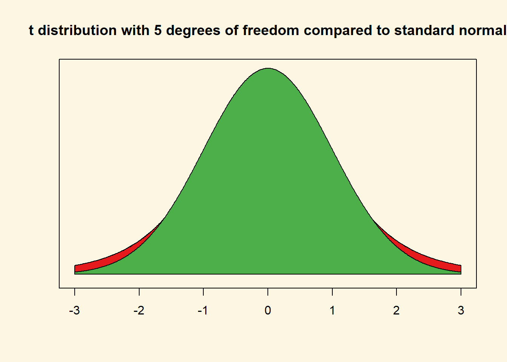
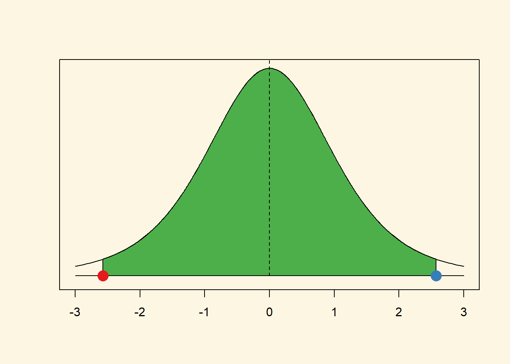
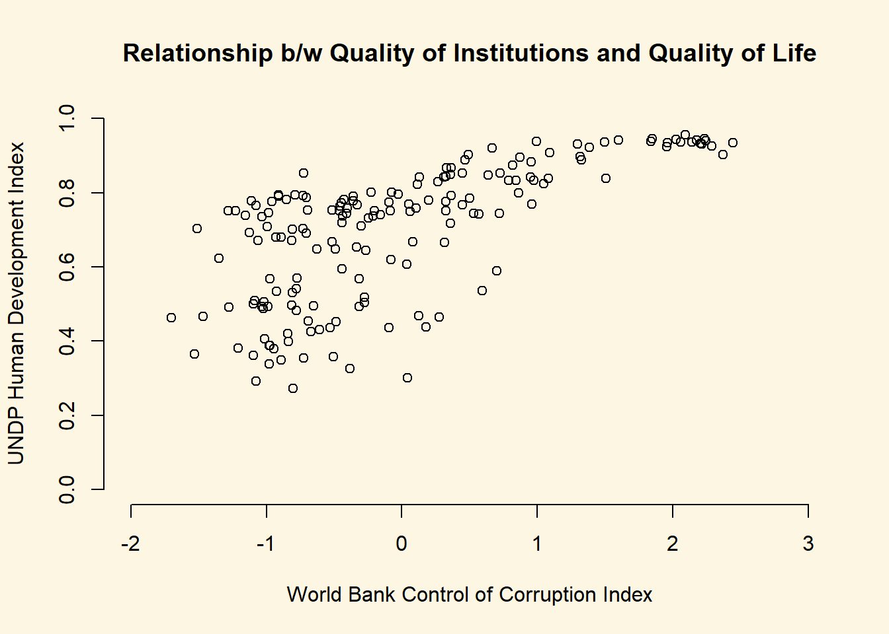

Chapter 4 T-test for Difference in Means and Hypothesis Testing
4.1 Seminar
Let’s remove all objects from our workspace and set the working directory.
rm(list=ls())
setwd("~/statistics1")We load the data from the Quality of Government Institute again. Let’s have a look at the codebook:
| Variable | Description |
|---|---|
| h_j | 1 if Free Judiciary |
| wdi_gdpc | Per capita wealth in US dollars |
| undp_hdi | Human development index (higher values = higher quality of life) |
| wbgi_cce | Control of corruption index (higher values = more control of corruption) |
| wbgi_pse | Political stability index (higher values = more stable) |
| former_col | 1 = country was a colony once |
| lp_lat_abst | Latitude of country’s captial divided by 90 |
Go ahead and load the data from last week yourself.
world.data <- read.csv("QoG2012.csv")We can get summary statistics of each variable in the dataset by using the summary() function over the dataset.
summary(world.data) h_j wdi_gdpc undp_hdi wbgi_cce
Min. :0.0000 Min. : 226.2 Min. :0.2730 Min. :-1.69953
1st Qu.:0.0000 1st Qu.: 1768.0 1st Qu.:0.5390 1st Qu.:-0.81965
Median :0.0000 Median : 5326.1 Median :0.7510 Median :-0.30476
Mean :0.3787 Mean :10184.1 Mean :0.6982 Mean :-0.05072
3rd Qu.:1.0000 3rd Qu.:12976.5 3rd Qu.:0.8335 3rd Qu.: 0.50649
Max. :1.0000 Max. :63686.7 Max. :0.9560 Max. : 2.44565
NA's :25 NA's :16 NA's :19 NA's :2
wbgi_pse former_col lp_lat_abst
Min. :-2.46746 Min. :0.0000 Min. :0.0000
1st Qu.:-0.72900 1st Qu.:0.0000 1st Qu.:0.1343
Median : 0.02772 Median :1.0000 Median :0.2444
Mean :-0.03957 Mean :0.6289 Mean :0.2829
3rd Qu.: 0.79847 3rd Qu.:1.0000 3rd Qu.:0.4444
Max. : 1.67561 Max. :1.0000 Max. :0.7222
NA's :7 4.1.1 The Standard Error
The standard error of an estimate quantifies uncertainty that is due to sampling variability. Recall that we infer from a sample to the population. Let’s have a look at wdi_gdpc which is gdp per capita. We re-name the variable to wealth. Do so on your own.
names(world.data)[2] <- "wealth"
names(world.data)[1] "h_j" "wealth" "undp_hdi" "wbgi_cce" "wbgi_pse"
[6] "former_col" "lp_lat_abst"Now, have a look at the mean of the new wealth variable.
mean(world.data$wealth)[1] NAR returns NA because there are missing values on the wealth variable and we cannot calculate with NAs. For instance, 2 + NA will return NA. We make a copy of the full data set and then delete missing values. We did this last week. Go ahead do so on your own.
# copy of the dataset
full.data <- world.data
# delete rows from dataset that have missings on wealth variable
world.data <- world.data[ !is.na(world.data$wealth) , ]Now, compute the mean of wealth again.
mean(world.data$wealth)[1] 10184.09The mean estimate in our sample is 10184.09. We are generally interested in the population. Therefore, we infer from our sample to the population. Our main problem is that samples are subject to sampling variability. If we take another sample, our mean estimate would be different. The standard error quantifies this type of uncertainty.
The formula for the standard error of the mean is: \[ SE(\bar{Y}) = \frac{s_Y}{\sqrt{n}} \]
Where \(s_Y\) is the standard deviation (of wealth) and \(n\) is the number of observations (of wealth).
We compute the standard error in R:
se.y_bar <- (sd(world.data$wealth) / sqrt( length(world.data$wealth) ))
se.y_bar[1] 922.7349The standard error is ~922.73. The mean of the sampling distribution is the population mean (or close to it — the more samples we take, the closer is the mean of the sampling distribution to the population mean). The standard error is the average difference from the population mean. We have taken 1 sample. When taking any random sample, the average difference between the mean in that sample and the population mean is the standard error.
We need the standard error for hypothesis testing. You will see how in the following.
4.1.2 T-test (one sample hypothesis test)
A knowledgeable friend declares that worldwide wealth stands at exactly 10 000 US dollars per capita today. We would like to know whether she is right and tease her relentlessly if she isn’t. To that end, we assume that her claim is the population mean. We then estimate the mean of wealth in our sample. If the difference is large enough, so that it is unlikely that it could have occurred by chance alone, we can reject her claim.
So, first we take the mean of the wealth variable.
mean(world.data$wealth)[1] 10184.09Wow, our friend is quite close. Substantially, the difference of our friends claim to our estimate is small but we could still find that the difference is statistically significant (it’s a noticeable systematic difference).
Because we do not have information on all countries, our 10184.09 is an estimate and the true population mean – the population here would be all countries in the world – may be 10000 as our friend claims. We test this statistically.
In statistics jargon: we would like to test whether our estimate is statistically different from the 10000 figure (the null hypothesis) suggested by our friend. Put differently, we would like to know the probability that we estimate 10184.09 if the true mean of all countries is 10000.
Recall, that the standard error of the mean (which is the estimate of the true standard deviation of the population mean) is estimated as:
\[ \frac{s_{Y}}{\sqrt{n}} \]
Before we estimate the standard error, let’s get \(n\) (the number of observations). We have done this above but to make our code more readable, we save the number of observations in an object that we call n. Go ahead and do this on your own.
n <- length(world.data$wealth)
n[1] 178With the function length(world.data$world) we get all observations in the data. Now, let’s take the standard error of the mean again.
se.y_bar <- sd(world.data$wealth) / sqrt(n)We know that 1 standard error is one average deviation from the population mean. The sampling distribution is approximately normal. 95 percent of the observations under the normal distribution are within 2 standard deviations of the mean.
We construct the confidence interval within which the population mean lies with 95 percent probability in the following way. First, we take our mean estimate of wealth. That’s the sample mean and not the population mean. Second, we go 2 standard errors to the left of it. This is the lower bound of our confidence interval. Third, we go 2 standard deviations to the right of the sample mean. That is the upper bound of our confidence interval.
The 95 percent confidence interval around the sample means gives the interval within which the population mean lies with 95 percent probability.
We want to know what the population mean is, right? Yes, that’s right. Therefore, we want the confidence interval to be as narrow as possible. The narrower the confidence interval, the more precise we are about the population mean. For instance, saying the population mean of income is between 9 950 and 10 050 is more precise than saying the population mean is between 5 000 and 15 000.
We construct the confidence interval with the standard error. That means, the smaller the standard error, the more precise our estimate. The formula for the 95 percent confidence interval is:
\[ \bar{Y} \pm 1.96 \times SE(\bar{Y}) \]
“Where does the 1.96 come from”, you ask. It’s a critical value. More on that later. For now, just recall that in a normal distribution 95 percent of all observations are within 1.96 standard errors of the mean.
We now construct our confidence interval. Our sample is large enough to assume that the sampling distribution is approximately normal. So, we can go \(1.96\) standard deviations to the left and to the right of the mean to construct our \(95\%\) confidence interval.
# lower bound
lb <- mean(world.data$wealth) - 1.96 * se.y_bar
# upper bound
ub <- mean(world.data$wealth) + 1.96 * se.y_bar
# results (the population mean lies within this interval with 95% probability)
lb # lower bound[1] 8375.531mean(world.data$wealth) # sample mean[1] 10184.09ub # upper bound[1] 11992.65You can make this look a little more like a table like so:
ci <- cbind(lower_bound = lb, mean = mean(world.data$wealth), upper_bound = ub)
ci lower_bound mean upper_bound
[1,] 8375.531 10184.09 11992.65The cbind() function stands for column-bind and creates a \(1\times3\) matrix.
So we are \(95\%\) confident that the population average level of wealth is between 8375.53 US dollars and 11992.65 US dollars. You can see that we are not very certain about our estimate and we most definitely cannot rule out that our friend is right (she claimed that the population mean is 10 0000—that is within our interval). Hence, we cannot reject it.
A different way of describing our finding is to emphasize the logic of (hypothetical) repeated sampling. In a process of repeated sampling we can expect that the confidence interval that we calculate for each sample will include the true population value \(95\%\) of the time. That is equivalent to what we said earlier because a probability is the long-run relative frequency of an outcome.
4.1.2.1 The t value
We now estimate the t value. Recall that our friend claimed that the population mean was 10 000. This is the null hypothesis that we wish to falsify. We estimated something else in our data, namely 10184.0910395. The t value is the difference between our estimate (the result we get by looking at data) and the population mean under the null hypothesis divided by the standard error of the mean.
\[ \frac{ \bar{Y} - \mu_0 } {SE(\bar{Y})} \]
Where \(\bar{Y}\) is the mean in our data, \(\mu_0\) is the population mean under the null hypothesis and \(SE(\bar{Y})\) is the standard error of the mean.
Okay, let’s compute this in R:
t.value <- (mean(world.data$wealth) - 10000) / se.y_bar
t.value[1] 0.1995059Look at the formula until you understand what is going on. In the numerator we take the difference between our estimate and the population mean under the null hypothesis. In expectation that difference should be 0—assuming that the null hypothesis is true. The larger that difference, the less likely that the null hypothesis is true.
We divide by the standard error to transform the units of the difference into standard deviations. Before we transformed the units, our difference was in the units of whatever variable we are looking at (US dollars in our example). By dividing by the standard error, we have normed the variable. Its units are now standard deviations from the mean.
Assume that the null hypothesis is true. In expectation the difference between our estimate in the data and the population mean should be 0 standard deviations. The more standard deviations our estimate is away from the population mean under the null hypothesis, the less likely it is that the null hypothesis is true.
Within 1.96 standard deviations from the mean lie 95 percent of all observations. That means, it is very unlikely that the null hypothesis is true, if the difference that we estimated is further than 1.96 standard deviations from the mean. “How unlikely,” you ask. We would need the p value, for the exact probability. However, the probability is less than 5 percent, if the estimated difference is more than 1.96 standard deviations from the population mean under the null hypothesis.
Back to our t value. We estimated a t value of 0.1995059. That means that a sample estimate of 10184.0910395 is 0.1995059 standard deviations from the population mean under the null hypothesis—which is 10 000 in our sample.
Our t value suggests that our sample estimate would only be 0.1995059 standard deviations away from the population mean under the null. That is not unlikely at all. We can only reject the null hypothesis if we are more than 1.96 standard deviations away from the mean.
4.1.2.2 The p value
Let’s estimate the precise p-value by calculating how likely it would be to observe a t-statistic of 0.1995059 from a t-distribution with n - 1 (177) degrees of freedom.
The function pt(t.value, df = n-1) is the cumulative probability that we get the t.value we put into the formula if the null is true. The cumulative probability is estimated as the interval from minus infinity to our t.value. So, 1 minus that probability is the probability that we see anything larger (in the right tale of the distribution). But we are testing whether the true mean is different from 10000 (including smaller). Therefore, we want the probability that we see a t.value in the right tale or in the left tale of the distribution. The distribution is symmetric. So we can just calculate the probability of seeing a t-value in the right tale and multiply it by 2.
2* ( 1 - pt(t.value, df = (n-1) ))[1] 0.8420961The p-value is way too large to reject the null hypothesis (the true population mean is 10 000). If we specified an alpha-level of 0.05 in advance, we would reject it only if the p-value was smaller than 0.05. If we specified an alpha-level of 0.01 in advance, we would reject it only if the p-value was smaller than 0.01, and so on.
Let’s verify our result using the the t-test function t.test(). The syntax of the function is:
t.test(formula, mu, alt, conf)Lets have a look at the arguments.
| Arguments | Description |
|---|---|
formula |
Here, we input the vector that we calculate the mean of. For the one-sample t test, in our example, this is the mean of wealth. For the t test for the difference in means, we would input both vectors and separate them by a comma. |
mu |
Here, we set the null hypothesis. The null hypothesis is that the true population mean is 10000. Thus, we set mu = 10000. |
alt |
There are two alternatives to the null hypothesis that the difference in means is zero. The difference could either be smaller or it could be larger than zero. To test against both alternatives, we set alt = "two.sided". |
conf |
Here, we set the level of confidence that we want in rejecting the null hypothesis. Common confidence intervals are: 95%, 99%, and 99.9%—they correspond to alpha levels of 0.05, 0.01 and 0.001 respectively. |
t.test(world.data$wealth, mu = 10000, alt = "two.sided")
One Sample t-test
data: world.data$wealth
t = 0.19951, df = 177, p-value = 0.8421
alternative hypothesis: true mean is not equal to 10000
95 percent confidence interval:
8363.113 12005.069
sample estimates:
mean of x
10184.09 The results are similar. Therefore we can conclude that we are unable to reject the null hypothesis suggested by our friend that the population mean is equal to 10000. Let’s see how we determine critical values.
4.1.2.3 Critical Values
In social sciences, we usually operate with an alpha level of 0.05. That means, we reject the null hypothesis if the p value is smaller than 0.05. Or put differently, we reject the null hypothesis if the 95 percent confidence interval does not include the population mean under the null hypothesis—which is always the case if our estimate is further than two standard errors from the mean under null hypothesis (usually 0).
We said earlier that the critical value is 1.96 for an alpha level of 0.05. That is true in large samples where the distribution of the t value follows a normal distribution. 95 percent of all observations are within 1.96 standard deviations of the mean.
The green area under the curve covers 95 percent of all observations. There are 2.5 percent in each tail. We reject the null hypothesis if our estimate is in the tails of the distribution. It must be further than 1.96 standard deviations from the mean. But how did we know that 95 percent of the area under the curve is within 1.96 standard deviations from the mean?
Let’s separate the curve in you mind into 3 pieces. The left tail covers 2.5 percent of the area under the curve. The green middle bit covers 95 percent and the right tail again 2.5 percent. Now we do this as cumulative probabilities. The left tail ends at 2.5 percent cumulative probability. The green area ends at 97.5 percent cumulative probability and the right tail ends at 100 percent.
The critical value is were the left tail ends or the right tail starts (looking at the curve from left to right). Let’s get the value where the cumulative probability is 2.5 percent—where the left tail ends.
#
qnorm(0.025, mean = 0, sd = 1)[1] -1.959964If you look at the x-axis of our curve that is indeed where the left tail ends. We add a red dot to our graph to highlight it.
Now, let’s get the critical value of where the right tail starts. That is at the cumulative probability of 97.5 percent.
qnorm(0.975, mean = 0, sd = 1)[1] 1.959964As you can see, this is the same number, only positive instead of negative. That’s always the case because the normal distribution is symmetric. Let’s add that point in blue to our graph.
This is how we get the critical value for the 95 percent confidence interval. By the way, back in the day you would have to look up critical values in critical values tables at the end of statistics textbooks (you can find the tables in Stock and Watson and Kellstedt and Whitten.)
As you can see our red and blue dots are the borders of the green area, the 95 percent interval around the mean. You can get the critical values for any other interval (e.g., the 99 percent interval) similar to what we did just now.
We now do the same for the t distribution. In the t distribution, the critical value depends on the shape of the t distribution which is characterised by its degrees of freedom. Let’s draw a t distribution with 5 degrees of freedom.
Although, it looks like a standard normal distribution, it is not. The t with 5 degrees of freedom has fatter tails. We show this by overlaying the t with a standard normal distribution.

The red area is the difference between the standard normal distribution and the t distribution with 5 degrees of freedom.
The tails are fatter and that means that the probabilities of getting a value somewhere in the tails is larger. Lets calculate the critical value for a t distribution with 5 degrees of freedom.
# value for cumulative probability 95 percent in the t distribution with 5 degrees of freedom
qt(0.975, df = 5)[1] 2.570582See how much larger that value is than 1.96. Under a t distribution with 5 degrees of freedom 95 percent of the observations around the mean are within the interval from negative 2.5705818 to positive 2.5705818.
Let’s illustrate that. 
Remember the critical values for the t distribution are always more extreme or similar to the critical values for the standard normal distribution. If the t distribution has few degrees of freedom, the critical values (for the same percentage area around the mean) are much more extreme. If the t distribution has many degrees of freedom, the critical values are very similar.
4.1.3 T-test (difference in means)
We are interested in whether there is a difference in income between countries that have an independent judiciary and countries that do not have an independent judiciary. Put more formally, we are interested in the difference between two conditional means. Recall that a conditional mean is the mean in a subpopulation such as the mean of income given that the country has a free judiciary (conditional mean 1).
The t-test is the appropriate test statistic. Our interval-level dependent variable is wealth which is GDP per capita taken from the World Development Indicators of the World Bank. Our binary independent variable is h_j which is 1 if a country has a free judiciary and 0 otherwise.
Let’s check the summary statistics of our dependent variable GDP per captia using the summary().
summary(world.data$wealth) Min. 1st Qu. Median Mean 3rd Qu. Max.
226.2 1768.0 5326.1 10184.1 12976.5 63686.7 Someone claims that countries with free judiciaries are usually richer than countries with controlled judiciaries. From the output of the summary() fucntion, we know that average wealth is 10184.0910395 US dollars across all countries—countries with and without free judiciaries.
We use the which() function from last week again, to identify the row-numbers of the countries in our dataset that have free judiciaries. Use the which() to get the row numbers of countries with free judiciaries.
which(world.data$h_j==1) [1] 8 9 13 14 18 23 28 33 39 40 41 42 43 44 50 52 54
[18] 55 60 70 71 72 74 75 76 77 80 82 84 85 90 93 94 104
[35] 105 107 110 112 114 115 118 126 127 131 143 144 145 146 149 153 154
[52] 155 157 160 163 165 166 167 168 169 170 171 178Now, all we need is to index the dataset like we did last week. We access the variable that we want (wealth) with the dollar sign and the rows in square brackets. Take the mean of wealth for countries with a free judiciary on your own.
mean( world.data$wealth[which(world.data$h_j==1)])[1] 17826.59Go ahead and find the mean per capita wealth of countries with controlled judiciaries.
mean( world.data$wealth[which(world.data$h_j==0)])[1] 5884.882Finally, we run the t-test for the difference between two means.
# t.test for the difference between 2 means
t.test(world.data$wealth[which(world.data$h_j==1)], # mean 1
world.data$wealth[which(world.data$h_j==0)], # mean 2
mu = 0, # difference under the null hypothesis
alt = "two.sided", # two sided test (difference in means could be smaller or larger than 0)
conf = 0.95) # confidence interval
Welch Two Sample t-test
data: world.data$wealth[which(world.data$h_j == 1)] and world.data$wealth[which(world.data$h_j == 0)]
t = 6.0094, df = 98.261, p-value = 0.00000003165
alternative hypothesis: true difference in means is not equal to 0
95 percent confidence interval:
7998.36 15885.06
sample estimates:
mean of x mean of y
17826.591 5884.882 Let’s interpret the results you get from t.test(). The first line tells us which groups we are comparing. In our example: Do countries with independent judiciaries have different mean income levels than countries without independent judiciaries?
In the following line you see the t-value, the degrees of freedom and the p-value. Knowing the t-value and the degrees of freedom you can check in a table on t distributions how likely you were to observe this data, if the null-hypothesis was true. The p-value gives you this probability directly. For example, a p-value of 0.02 would mean that the probability of seeing this data given that there is no difference in incomes between countries with and without independent judiciaries in the population, is 2%. Here the p-value is much smaller than this: 3.165e-08 = 0.00000003156!
In the next line you see the 95% confidence interval because we specified conf=0.95. If you were to take 100 samples and in each you checked the means of the two groups, 95 times the difference in means would be within the interval you see there.
At the very bottom you see the means of the dependent variable by the two groups of the independent variable. These are the means that we estimated above. In our example, you see the mean income levels in countries were the executive has some control over the judiciary, and in countries were the judiciary is independent.
Note that we are analysing a bi-variate relationship. The dependent variable is wealth and the independent variable is h_j.
Furthermroe, note that in the t test for the differences in means, the degrees of freedom depend on the variances in each group. You do not have to compute degrees of freedom for t tests for the differences in means yourself in this class—just use the t.test() function.
4.1.4 Estimating p values from t values
Estimating the p value is the reverse of getting a critical value. We have a t value and we want to know what the probability is to get such a value or an even more extreme value.
Let’s say that we have a t distribution with 5 degrees of freedom. We estimated a t value of 2.9. What is the corresponding p value?
(1 - pt(2.9, df = 5)) *2[1] 0.0337907This is the probability of getting a t value of 2.9 or larger (or -2.9 or smaller) given that the null hypothesis is true. pt(2.9, df = 5) is the cumulative probability of getting a t value of 2.9 or smaller. But we want the probability of getting a value that is as large (extreme) as 2.9 or as small as -2.9. Therefore, we do 1 - pt(2.9, df = 5). We multiply by 2 to get both tails (1 - pt(2.9, df = 5))*2. This is the probability of getting a t value in the red tails of the distribution if the null hypothesis was true.
Clearly, the probability of getting such an extreme value (or something larger) under the assumption that the null hypothesis is true is very unlikely. The exact probability is ~0.03 (3 percent). We, therefore, think that the null hypothesis is false.
Let’s estimate the p value in a normal distribution (it’s actually better to always use the t distribution but the difference is negligible if the t distribution has many degrees of freedom).
Let’s take our earlier example where we had estimated a t value of 0.1995059. Our friend claimed world income is 10 000 per capita on average and we estimated something slightly larger.
Let’s check what the exact p value is in a normal distribution given a t value of 0.1995059.
(1 - pnorm(0.1995059))*2[1] 0.841867Clearly, it was not very unlikely to find a t value of 0.1995059 (that’s the absolute value, i.e., a t value of negative or postive 0.1995059) under the assumption that the null hypothesis is true. Therefore, we cannot reject the null. The probability is 0.84 (84 percent)—highly likely.
4.1.5 Exercises
- Create a new file called “assignment4.R” in your
statistics 1folder and write all the solutions in it. - Turn former colonies into a factor variable and choose appropriate labels.
- How many countries were former colonies? How many were not?
- Find the means of political stability in countries that (1) were former colonies, (2) were not former colonies.
- Is the the difference in means statistically significant?
- In layman’s terms, are countries which were former colonies more or less stable than those that were not?
- How about if we choose an alpha level of 0.01?
- What is the level of measurement of the United Nations Development index variable
undp_hdi? - Check the claim that its true population mean is 0.85.
- Calculate the t statistic.
- Calculate the p value.
- Construct a confidence interval around your mean estimate.
- Discuss your findings in terms of the original claim. Interpret the t value, the p value, and the confidence interval.
- Compute the critical value for the 99.9 percent confidence interval in a standard normal distribution.
- Compute the critical value for the 99.9 percent confidence interval in a t distribution with 11 degrees of freedom.
- Save the script that includes all previous tasks.
- Source your script, i.e. run the entire script all at once without error message.
4.1.6 Optional Exercises that require reading Extra Info below
- Create a scatter plot with latitude on the x-axis and political stability on the y-axis.
- What is the correlation coefficient of political stability and latitude?
- If we move away from the equator, how does political stability change?
- Does it matter whether we go north or south from the equator?
4.1.7 Advanced Exercises
- Calculate the numerical difference in means (political stability conditional on colonialization) using the
means()function. - Calculate the standard deviation of the difference in means (hint: using just the
sd()function is incorrect in this context). - Is the difference in means more than 1.96 standard deviations away from zero? Interpret the result.
- We claim the difference in means in terms of political stability between countries that were former colonies and those that were not is 0.3. Check this hypothesis.
- An angry citizen who wants to defund the Department of International Development (DFID) claims that countries that were former colonies have reached 75% of the level of wealth of countries that were not colonised. Check this claim.
4.1.8 Extra Info
When we want to get an idea about how two continuous variables change together, the best way is to plot the relationship in a scatterplot. A scatterplot means that we plot one continuous variable on the x-axis and the other on the y-axis. Here, we illustrate the relation between the human development index undp_hdi and control of corruption wbgi_cce.
# scatterplot
plot(world.data$undp_hdi ~ world.data$wbgi_cce,
xlim = c(xmin = -2, xmax = 3),
ylim = c(ymin = 0, ymax = 1),
frame = FALSE,
xlab = "World Bank Control of Corruption Index",
ylab = "UNDP Human Development Index",
main = "Relationship b/w Quality of Institutions and Quality of Life"
)
Sometimes people will report the correlation coefficient which is a measure of linear association and ranges from -1 to +1. Where -1 means perfect negative relation, 0 means no relation and +1 means perfect positive relation. The correlation coefficient is commonly used as as summary statistic. It’s disadvantage is that you cannot see the non-linear relations which can using a scatterplot.
We take the correlation coefficient like so:
cor(y = world.data$undp_hdi, x = world.data$wbgi_cce, use = "complete.obs")[1] 0.6813353| Argument | Description |
|---|---|
x |
The x variable that you want to correlate. |
y |
The y variable that you want to correlate. |
use |
How R should handle missing values. use="complete.obs" will use only those rows where neither x nor y is missing. |